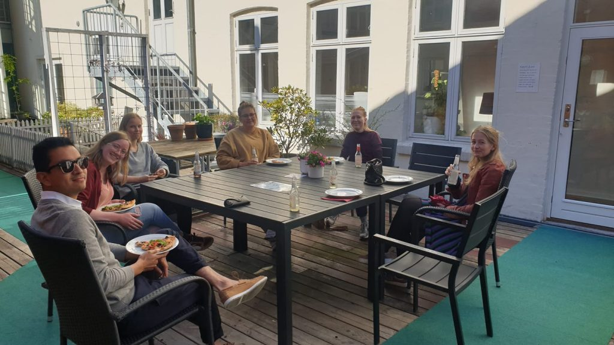

Åbent Sinds ungegruppe, er et tilbud på Stoppestedet, for unge mellem 18 og 35 år i Odense Kommune.
Man kan komme anonymt og det kræver ingen tilmelding.
Onsdag aften mødes unge med en psykisk sårbarhed i vores unge lejlighed i Jernbanegade.
De frivillige sætter rammerne for det sociale fællesskab.
Vi spiller spil, snakker om almindelig unge ting, ser en film eller går ud i byen f.eks. i biffen, Papas papbar eller på cafe.
Hvem der er værter, og hvad der er planlagt, deles hver måned på vores Facebookgruppe, som hedder “ÅbentSINDs Ungegruppe”.
Kan det være svært at komme afsted på egen hånd? Eller er det en udfordring at møde nye mennesker?
Så kontakt os inden du besøger Ungegruppen.
Vi kan enten hente dig i døren eller mødes et par minutter inden de andre møder op.
Meld dig ind i “ÅbentSINDs Ungeruppe” på facebook eller find “Koordinator Åbentsinds Ungegruppe”, hvis du har lyst til at vide mere om fællesskabet.
Følgevenner – Det er nemmere at følges ad!
I Åbent Sind har vi også mulighed for at skabe en tættere ung-til-ung relation, som vi kalder følgevenner.
Her kan du blive matchet med en ung frivillig, for at følges til andre aktiviteter eller arrangementer.
Måske du har lyst til at træne eller gå til badminton, men føler det kan være svært at komme afsted på egen hånd?
Eller drikke kaffe på en café og snakke om livets store og små udfordringer?
Så er en følgeven måske noget for dig.
Du finder os på Jernbanegade 24B
Vi har åbent Onsdag kl. 18 – 21